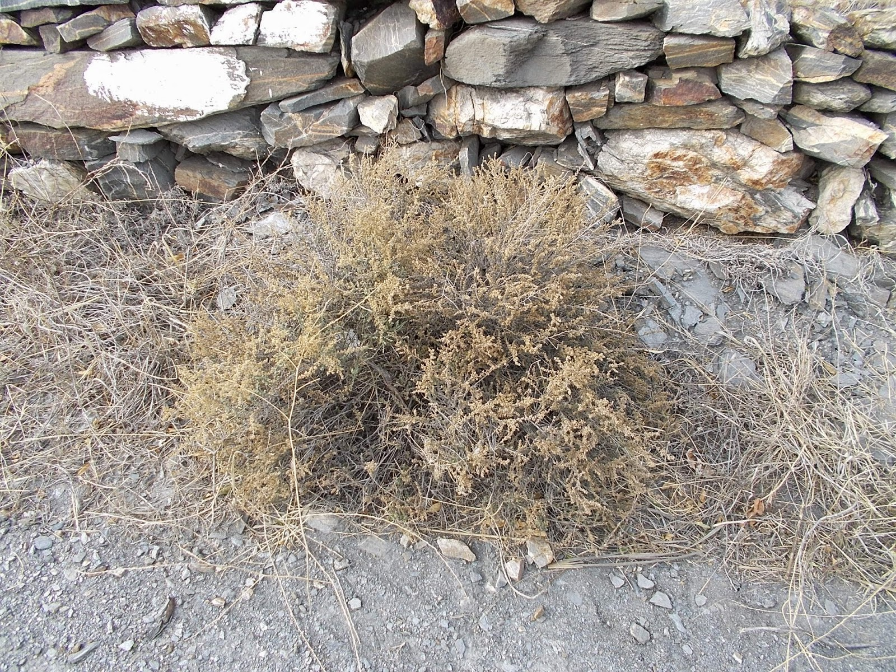

Ayuntamiento de Senés
JARDIN BOTANICO DE ESPECIES AUTOCTONAS DE SENES

Artemisia barrelieri

La boja yesquera (Artemisia barrelieri) es un arbusto perenne característico de zonas áridas y semiáridas del sureste de la península ibérica. Está especialmente adaptada a suelos yesíferos y pobres, donde forma parte del matorral típico de ambientes extremos.
Presenta un porte bajo y muy ramificado, formando matas densas de color grisáceo. Sus hojas son pequeñas, divididas y cubiertas de finos pelos que le permiten reducir la pérdida de agua y resistir altas temperaturas.
La boja yesquera es propia de regiones semiáridas del sureste peninsular, donde se desarrolla en suelos yesosos, pobres en nutrientes y con escasa retención de agua. Es frecuente en laderas, ramblas y zonas degradadas.
En áreas como la Sierra de los Filabres, aparece en ambientes muy secos, formando parte del matorral adaptado a condiciones edáficas difíciles, contribuyendo a la estabilidad del suelo.
La boja yesquera contiene compuestos aromáticos y ha sido utilizada tradicionalmente por sus propiedades digestivas y antisépticas. Como otras especies del género Artemisia, presenta aceites esenciales con actividad biológica.
Además, tiene interés ecológico por su capacidad para colonizar suelos difíciles, favoreciendo la regeneración de ecosistemas degradados.
La boja yesquera simboliza la adaptación a condiciones extremas y la capacidad de supervivencia en suelos difíciles. Representa la fortaleza de la vegetación autóctona frente a ambientes hostiles.
En el paisaje mediterráneo seco, es un ejemplo de especialización ecológica y equilibrio natural.
En Senés, la boja yesquera la utilizaban como cama de corrales, porque al pudrirse con los excrementos de los animales, de la mezcla salía un estiercol excepcional. La yesca que producen se utilizaba para encender lumbre. En Senés tambien se le conocía como "Meaperros" porque estos animales solían escogerlas para realizar sus micciones.
No se le ha conocido utilidad medicinal.
La boja yesquera florece generalmente en otoño, produciendo pequeñas flores poco vistosas agrupadas en inflorescencias discretas.
El término “yesquera” hace referencia a su afinidad por suelos ricos en yeso, un tipo de sustrato difícil para muchas plantas, lo que la convierte en una especie altamente especializada.
Su color grisáceo es una adaptación que le permite reflejar la radiación solar, reduciendo el estrés hídrico en ambientes extremadamente secos.